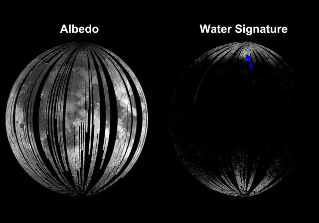
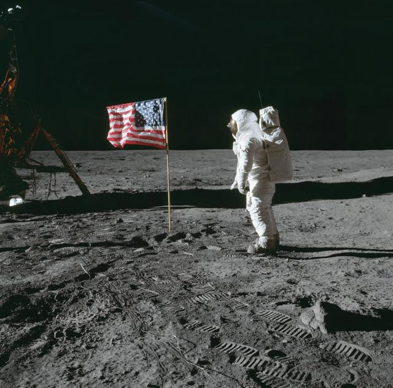

The Moon
The Moon is Earth's natural satellite and the brightest object in our night sky. Its surface has craters, old lava plains, and mountains.
Type
Natural satellite
Distance
384,400 km
Fun Fact
Helps raise ocean tides
The Moon is Earth's natural satellite and the brightest object in our night sky. Its surface has craters, old lava plains, and mountains.
Natural satellite
384,400 km
Helps raise ocean tides
NASA IMAGE ARCHIVE


The Moon moves a little farther from Earth each year. As it orbits us, sunlight reaches different parts of its surface, which is why we see phases.
The shadow is a simple illustration. Moon phases are caused by seeing different portions of the sunlit Moon, not by Earth's shadow.
Pick a phase to see how much of the Moon's Earth-facing side is lit.